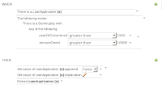

Drools 5.1 M1 release notes
We’re proud to announce a first milestone release of Drools 5.1. It includes a lot of new features, as described below. So try them out and let us know what you think.
Drools Core and Fusion
JMX Monitoring
JMX monitoring was added to support KnowledgeBase monitoring. This is specially importand for long running processes like the ones usually required for event processing. Initial integration with JOPR was also added.
Drools Flow
BPMN2
With the Business Process Model and Notation (BPMN) 2.0 specification steadily moving forward on its way to become a great standard, we are adopting it for our process modeling in Drools Flow. This includes both the visualization (with a new BPMN2 skin) and serialization to XML. This means that you can save your Drools Flow processes using the standardized BPMN2 XML format. We have already implemented a significant subset of the process elements defined in the BPMN2 specification. A recent blog entry explains this using a simple example.
For more information, check out the BPMN2 chapter in the Drools Flow documentation.
Web-based management console
Drools Flow processes can now also be managed through a web console. This includes features like managing your process instances (starting/stopping/inspecting), inspecting your (human) task list and executing those tasks, and generating reports.
This console is actually the (excellent!) work of Heiko Braun, who has created a generic BPM console that can be used to support multiple process languages. We have therefore implemented the necessary components to allow this console to communicate with the Drools Flow engine.
Check out the console chapter in the Drools Flow documentation for more information, screen shots, etc. A small video of the console in action (as published in an earlier blog) can be found here.
Pluggable variable persistence
Drools Flow can persist the runtime state of the running processes to a database (so they don’t all need to be in memory and can be restored in case of failure). Our default persistence mechanism stores all the runtime information related to one process instance as a binary object (with associated metadata). The data associated with this process instance (aka process instance variables) were also stored as part of that binary object. This however could generate problem (1) when the data was not Serializable, (2) when the objects were too large to persist as part of the process instance state or (3) when they were already persisted elsewhere. We have therefor implemented pluggable variable persisters where the user can define how variable values are stored. This for example allows you to store variable values separately, and does support JPA entities to be stored separately and referenced (avoiding duplication of state).
Improved process instance migration
Over time, processes may evolve. Whenever a process is updated, it is important to determine what should happen to the already running process instances. We have improved our support for migrating running process instances to a newer version of the process definition. Check out this section in the documentation for more information.
Drools Guvnor
Discussion feature
A discussion/comment feature for files in Guvnor. More
Inbox feature
Ability to track what you have opened, or edited – this shows up under an “Inbox” item in the main navigator. More
Bulk importer
The Guvnor-Importer is a maven build tool that recurses your rules directory structure and constructs an xml import file that can be manually imported into the Drools-Guvnor web interface via the import/export administration feature. More
DroolsDoc
PDF document containing information about the package and each DRL asset. DroolsDoc for knowledge package can be downloaded from package view under “Information and important URLs”
BPEL editor
BPEL files can be created, edited and uploaded to Guvnor. The editor is made with Flex.
Guided Rule Editor
Editing rules is made more explicit. Editor is less “boxy” and rules are written more as a normal text. “contains” keyword was added and binding variables to restrictions is now easier.

Decision tables
Keyword “in” was added. Columns can be moved and location of a new row can be selected freely.
General usability and appearance
Appearance has been cleaned, for example less pop ups. Reminders for save after changes in assets and information about actions that were taken, also better error reporting if something goes wrong.
Bug fixes
Most of the bug fixes are related to DSL and enums, also authorization for WebDAV is working.
Eclipse plugin
To support the use of the BPMN2 specification in Drools Flow, a new process skin has been added that more closely resembles the BPMN2 visualization, and a new BPMN2 editor was added that uses the BPMN2 XML format to save the process definition.
Other than that, there were a few small enhancements:
– Fixed an issue with debugging on Eclipse 3.5
– Minor changes to how Drools runtimes are handled in the IDE to make it easier and safer to use

{kind=link}